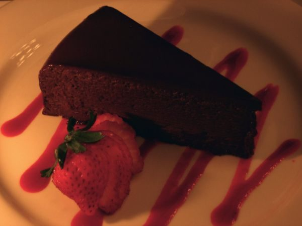

Sin Cake

Photo: sanbeiji (CC BY-SA 2.0)
A trifle-style layered dessert of crumbled chocolate cake soaked with Kahlua, layered with chocolate pudding and whipped topping, and finished with crushed Heath bars.
Directions
- Bake cake as directed. Prepare pudding as directed. Break up cake into pieces once cooled and place half of the pieces in a large glass bowl. Pour half the Kahlua over cake, and then put half the pudding over that. Top with half the cool whip. Repeat for next layers. Finally add crumbled heath bar to top. Keep chilled.
- Bake the chocolate cake as directed on the package.
- Prepare the instant chocolate pudding as directed.
- Once the cake has cooled, break it up into pieces and place half of the pieces in a large glass bowl.
- Pour half the Kahlua over the cake, then spread half the pudding over that.
- Top with half the Cool Whip.
- Repeat the layers with the remaining cake pieces, Kahlua, pudding, and Cool Whip.
- Add the crumbled Heath bars to the top.
- Keep chilled.
Goes well with
https://lizotte.cool/recipe/sin-cake.html